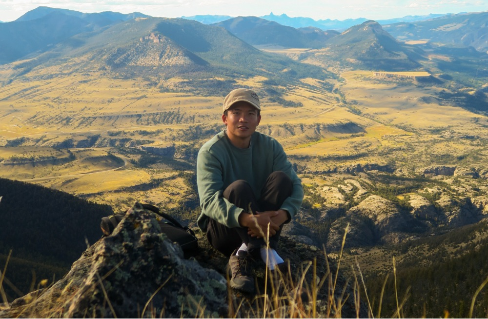

Hello, I'm Zhoucai
I'm a software engineer at State Affairs in San Francisco, where I build the recommendation, search and real-time alert systems that help people follow legislation across all 50 states and Congress. Before that I was the founding engineer at Zeal AI.
I studied Computer Science, with a minor in Earth Science, at Dartmouth College. I'm also a photographer and videographer (some of it is on the Other page). In my free time I like to read, go to the gym and skateboard.
email: nizhoucai@gmail.com
Experience
-
State Affairs, Software Engineer
Recommendation, vector search and event pipelines that rank 2M+ bills and send real-time legislative alerts.
-
Zeal AI, Founding Software Engineer
Semantic search over restaurant reviews, a FastAPI microservices backend and a streaming LLM chat interface.
-
Tuck School of Business, Research Assistant
Python data pipelines and NLP feature extraction for supply-chain research.
-
Dartmouth College, Computer Science, minor in Earth Science
HackDartmouth, Film Society, and photographer for The Dartmouth.